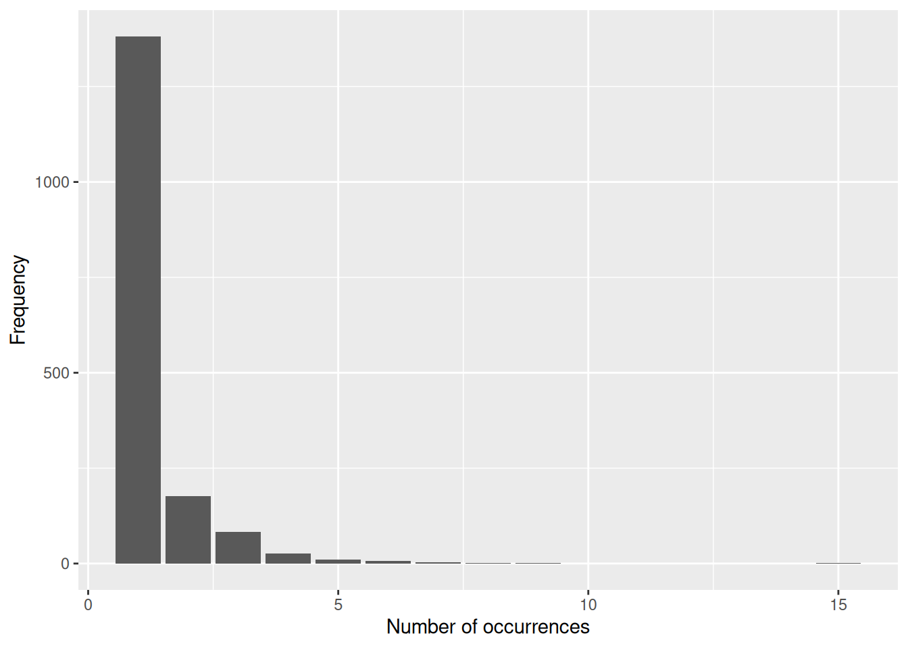
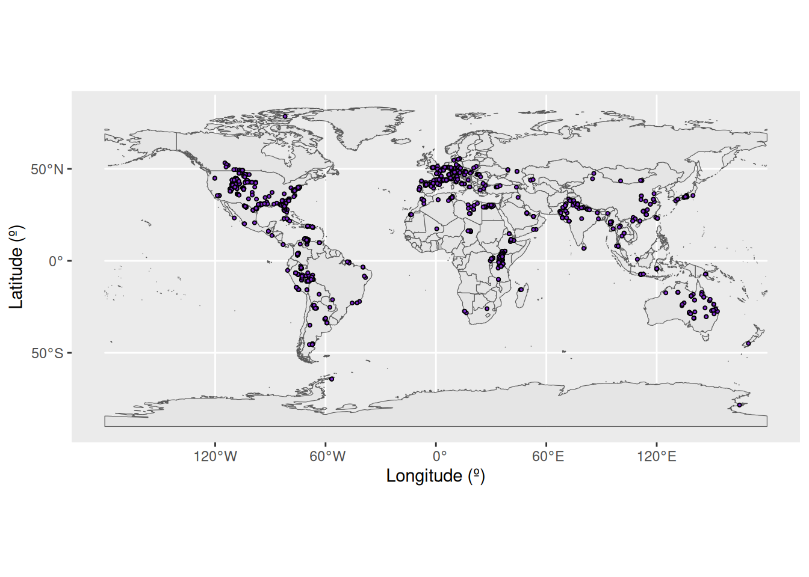
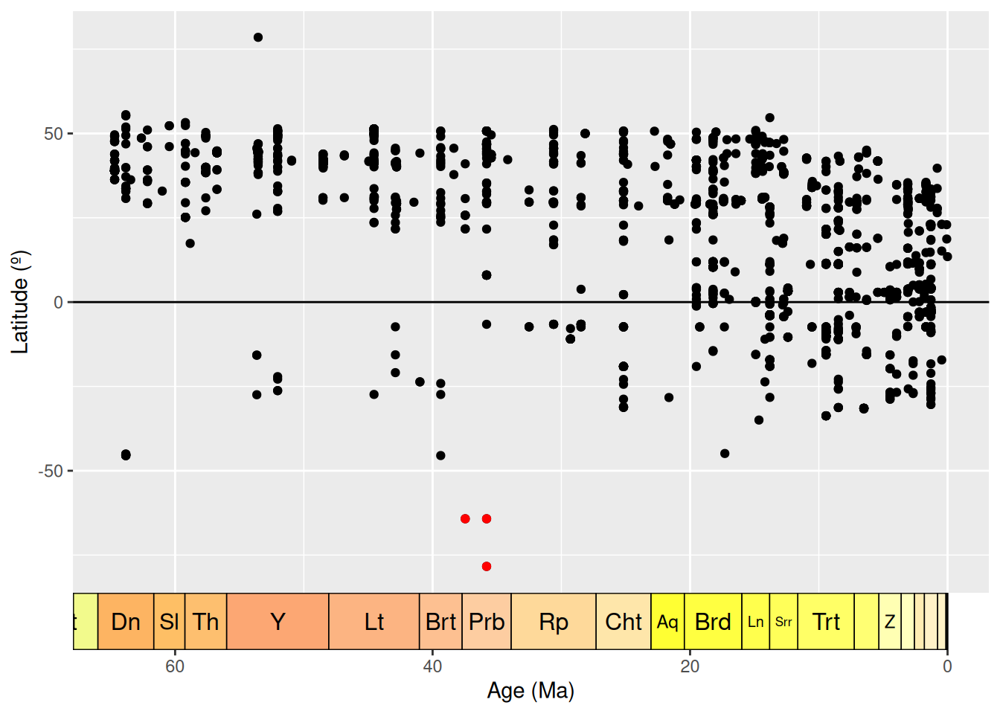
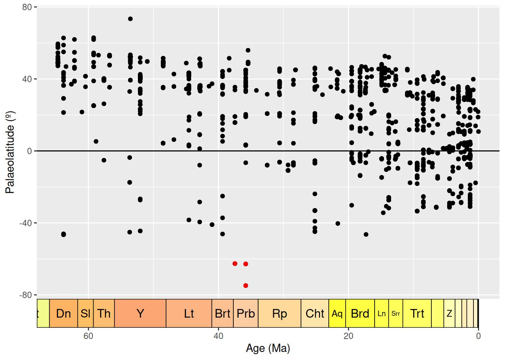
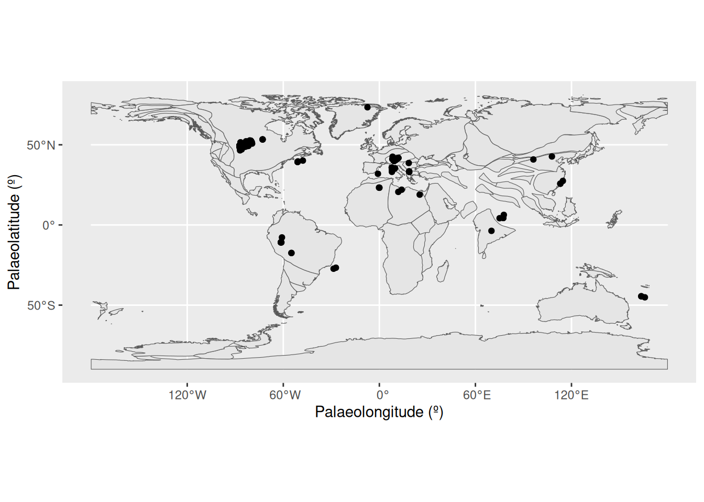
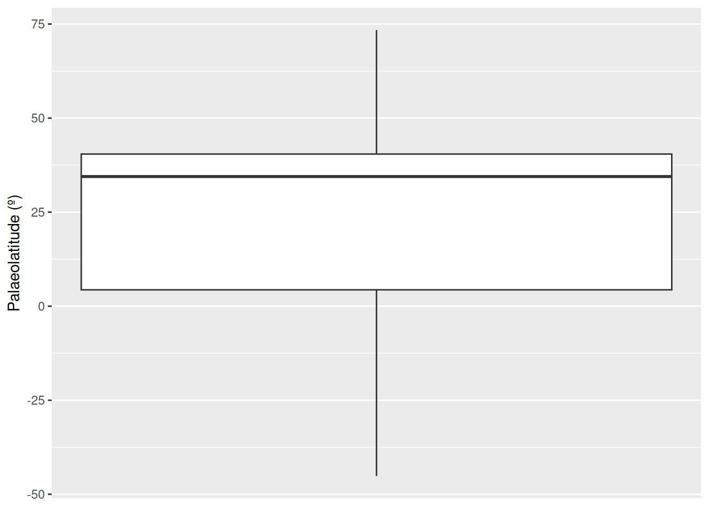

# install.packages("dplyr")
# install.packages("palaeoverse")
# install.packages("ggplot2")
# install.packages("rnaturalearth")
# install.packages("rnaturalearthdata")
# install.packages("deeptime")
# install.packages("rgplates")
# install.packages("fossilbrush")
library(dplyr)
library(palaeoverse)
library(ggplot2)
library(rnaturalearth)
library(rnaturalearthdata)
library(deeptime)
library(rgplates)
library(fossilbrush)
# Load data
fossils <- read.csv("cenozoic_crocs.csv")Data Processing I
Data Processing I: Data Exploration and Cleaning
Learning Objectives
In this session, the objectives are to (1) understand why data exploration and cleaning is key for data analyses and (2) develop the skills and knowledge needed to explore and clean data. We will cover:
- Exploratory data analyses
- Identifying and handling incomplete records
- Identifying and handling outliers
- Identifying and handling inconsistencies
- Identifying and handling duplicate records
Schedule
11:15–12:30
Data exploration
Why do we explore our data?
After acquiring the raw data to address your research question, a practical next step is to explore your data. Exploratory data analysis involves using graphical tools and basic statistical techniques to better understand the characteristics of your dataset, identify anomalies, and uncover patterns. This step is important for a variety of reasons:
- Reveal the structure and attributes of your dataset, such as variable types and distributions, numbers of observations, and spatial or temporal dependencies between observations.
- Highlight relationships between variables to guide future analyses and maximise statistical insights.
- Help you select appropriate statistical tools and verify their assumptions to avoid type I (false positive) and II (false negative) errors that might lead to incorrect conclusions.
- Flag systematic biases (e.g. taphonomic or sampling biases) that warrant careful consideration when interpreting your results.
- Reveal missing values, outliers, inconsistencies, duplication, and other unusual or erroneous values that require cleaning.
Together, exploratory data analysis is used to assess the quality and completeness of your dataset and gauge whether it can provide a meaningful and representative sample to address your research question. Without this step, you run the risk of applying inappropriate statistical techniques or making faulty inferences.
How do we explore our data?
Load packages and data
Before we start, we will load the R packages and data we need:
The first thing we want to do with our data is generate summary statistics and plots to help us understand the data and its various characteristics.
For example, we can look at the distribution of identification levels for our fossils.
# Count the frequency of taxonomic ranks
table(fossils$accepted_rank)
family genus species subfamily subgenus
15 624 850 3 1
subspecies superfamily unranked clade
2 30 718 # Calculate as percentages
(table(fossils$accepted_rank) / nrow(fossils)) * 100
family genus species subfamily subgenus
0.66874721 27.81988408 37.89567543 0.13374944 0.04458315
subspecies superfamily unranked clade
0.08916630 1.33749443 32.01069996 We can see that of our 2243 occurrences, 850 (~38%) are identified to species level. A further 624 (~28%) are identified to genus level. The remaining fossils are more coarsely identified, including 718 (~32%) which are identified to the mysterious level of “unranked clade”.
Next, let’s look at the distribution of fossils across localities. In the PBDB, fossils are placed within collections, each of which can roughly be considered a separate locality (they can also represent different sampling horizons at the same locality; more on this later). First, we can count the number of unique collection_no values to find out how many unique collections are in the dataset.
# What is the length of a vector of unique collection numbers?
length(unique(fossils$collection_no))[1] 1692Our dataset contains 1692 unique collections.
We can also create a plot showing us the distribution of occurrences across these collections. First let’s tally up the number of occurrences in each collection.
# Count the number of times each collection number appears in the dataset
coll_no_freq <- as.data.frame(table(fossils$collection_no))
coll_no_freq Var1 Freq
1 3113 4
2 5241 1
3 11601 1
4 11803 1
5 12842 1
6 12847 1
7 12970 1
8 13063 1
9 13065 7
10 13079 2
11 13096 1
12 13127 1
13 13221 1
14 13265 1
15 13293 1
16 13318 2
17 13319 1
18 13322 6
19 13346 1
20 13456 1
21 13626 6
22 13686 1
23 13739 1
24 13747 1
25 13749 1
26 13758 1
27 13782 1
28 14658 3
29 14662 1
30 14670 2
31 14692 2
32 14713 1
33 14729 1
34 14730 1
35 14735 1
36 14736 2
37 14738 1
38 14739 2
39 14748 1
40 14762 1
41 14764 1
42 14766 2
43 14774 2
44 14790 2
45 14805 3
46 14830 2
47 14872 1
48 14873 2
49 14874 2
50 14883 1
51 14928 1
52 14956 1
53 14962 1
54 14963 1
55 14970 1
56 14975 1
57 14992 1
58 15000 2
59 15034 1
60 15049 1
61 15074 2
62 15091 1
63 15098 1
64 15108 1
65 15114 1
66 15119 1
67 15132 1
68 15147 1
69 15152 1
70 15155 1
71 15157 1
72 15159 1
73 15171 1
74 15173 2
75 15174 1
76 15176 1
77 15184 1
78 15190 1
79 15192 1
80 15208 2
81 15211 1
82 15217 2
83 15252 1
84 15454 1
85 15458 1
86 15583 1
87 15586 2
88 15587 1
89 15589 1
90 15590 1
91 15592 1
92 15593 1
93 15594 1
94 15595 3
95 15665 2
96 15668 1
97 15669 1
98 15682 1
99 15683 1
100 15687 1
101 15688 1
102 15692 1
103 15694 2
104 15695 1
105 15696 1
106 15697 1
107 15698 1
108 15699 1
109 15701 1
110 15702 1
111 15703 1
112 15704 1
113 15705 1
114 15706 1
115 15707 1
116 15718 1
117 15759 3
118 15760 1
119 15761 1
120 15771 1
121 15780 2
122 15793 1
123 15830 2
124 15832 1
125 15833 1
126 15837 4
127 15895 3
128 15914 1
129 15917 1
130 15997 1
131 16000 1
132 16134 1
133 16196 1
134 16202 1
135 16228 7
136 16235 1
137 16236 1
138 16244 1
139 16253 1
140 16261 1
141 16262 1
142 16264 2
143 16265 1
144 16266 1
145 16267 1
146 16268 2
147 16270 3
148 16272 3
149 16273 3
150 16274 1
151 16279 1
152 16280 1
153 16282 1
154 16296 2
155 16396 2
156 16405 1
157 16414 1
158 16438 1
159 16528 1
160 16542 3
161 16545 1
162 16549 1
163 16550 1
164 16586 1
165 16590 1
166 16607 1
167 16614 1
168 16623 2
169 16650 2
170 16651 1
171 16656 1
172 16662 1
173 16666 1
174 16669 2
175 16674 1
176 16675 1
177 16676 1
178 16687 1
179 16695 1
180 16712 1
181 16823 1
182 16842 1
183 16877 1
184 16885 1
185 16919 1
186 16938 1
187 17341 1
188 17476 1
189 17837 1
190 17865 2
191 17904 1
192 18004 1
193 18028 1
194 18031 1
195 18046 1
196 18284 1
197 18327 1
198 18357 1
199 18442 1
200 18443 1
201 18537 1
202 18539 2
203 18550 1
204 18554 2
205 18556 2
206 18560 2
207 18561 1
208 18564 1
209 18579 1
210 18586 2
211 18587 1
212 18597 1
213 18601 1
214 18610 1
215 18611 1
216 18613 1
217 18619 2
218 18623 1
219 18626 1
220 18627 1
221 18628 1
222 18630 1
223 18640 1
224 18645 1
225 18646 1
226 18663 2
227 18665 1
228 18759 1
229 19673 1
230 19750 1
231 19753 1
232 19764 1
233 20079 1
234 20302 1
235 20400 1
236 20402 1
237 20440 1
238 20491 1
239 20495 1
240 20530 1
241 20604 1
242 20613 1
243 20650 1
244 21282 1
245 21287 1
246 21294 1
247 21300 2
248 21332 2
249 21334 2
250 21335 1
251 21336 3
252 21337 1
253 21338 1
254 21339 1
255 21340 1
256 21341 2
257 21369 3
258 21377 3
259 21396 1
260 21414 3
261 21442 3
262 21446 3
263 21451 3
264 21453 3
265 21456 3
266 21466 3
267 21490 3
268 21495 1
269 21497 3
270 21499 3
271 21500 3
272 21513 3
273 21522 3
274 21524 3
275 21526 3
276 21531 3
277 21534 3
278 21538 3
279 21626 1
280 21627 1
281 21654 1
282 21688 2
283 21723 1
284 21724 1
285 21835 1
286 21836 1
287 21837 1
288 21839 1
289 21843 1
290 21848 1
291 21855 1
292 21962 1
293 21970 1
294 21973 1
295 21974 1
296 22041 1
297 22064 1
298 22069 1
299 22071 1
300 22077 1
301 22078 2
302 22081 1
303 22082 1
304 22089 1
305 22134 1
306 22138 1
307 22160 1
308 22174 1
309 22178 1
310 22196 1
311 22234 2
312 22235 3
313 22236 2
314 22237 2
315 22238 1
316 22239 2
317 22241 5
318 22242 3
319 22248 1
320 22265 1
321 22268 1
322 22269 1
323 22270 1
324 22271 1
325 22272 1
326 22273 1
327 22275 1
328 22276 1
329 22277 1
330 22278 1
331 22290 1
332 22300 1
333 22301 1
334 22302 1
335 22303 1
336 22307 1
337 22316 1
338 22329 1
339 22336 3
340 22338 2
341 22345 2
342 22346 1
343 22368 1
344 22376 2
345 22377 1
346 22423 1
347 22424 1
348 22444 1
349 22456 1
350 22486 1
351 22487 1
352 22491 1
353 22494 1
354 22495 3
355 22505 1
356 22506 2
357 22548 1
358 22552 1
359 22553 1
360 22554 1
361 22577 1
362 22578 1
363 22579 1
364 22593 1
365 22596 2
366 22614 1
367 22621 2
368 22626 2
369 22628 1
370 22664 1
371 22701 3
372 22924 1
373 23115 1
374 24181 3
375 24237 1
376 25654 1
377 26129 2
378 26550 1
379 26574 1
380 27077 1
381 27268 4
382 27269 4
383 27353 1
384 27508 1
385 28180 1
386 28194 1
387 28230 1
388 28292 1
389 28293 1
390 28368 1
391 28422 1
392 28747 2
393 31108 1
394 31173 1
395 31183 1
396 31316 1
397 31605 1
398 31606 1
399 31717 1
400 31735 1
401 31743 1
402 31748 1
403 31762 1
404 32051 2
405 32052 1
406 32053 2
407 32054 1
408 32055 2
409 32058 2
410 32060 1
411 32079 1
412 32085 2
413 32111 1
414 32116 2
415 32931 1
416 32948 1
417 34269 1
418 34615 2
419 34805 1
420 34845 1
421 34846 1
422 34847 1
423 35132 1
424 35275 1
425 35277 3
426 35279 1
427 35280 1
428 35281 2
429 35531 5
430 35986 1
431 36113 1
432 36114 1
433 36266 2
434 36628 1
435 36631 2
436 36633 1
437 36713 1
438 37239 1
439 37559 1
440 37703 2
441 38060 1
442 38076 2
443 38077 1
444 38172 1
445 38793 1
446 38814 1
447 38817 1
448 39014 1
449 39015 1
450 39209 3
451 39210 1
452 39643 2
453 39662 1
454 39665 1
455 39667 1
456 39892 1
457 40030 1
458 40358 1
459 40516 1
460 40758 1
461 40883 1
462 41073 2
463 41078 2
464 41308 1
465 41735 1
466 41810 1
467 41812 1
468 41813 1
469 41818 1
470 41992 1
471 41998 1
472 42067 1
473 42119 1
474 42130 1
475 43026 1
476 43030 1
477 43063 2
478 43400 1
479 44977 1
480 44999 1
481 45000 1
482 45002 3
483 45097 1
484 45235 1
485 45237 2
486 45239 1
487 45317 1
488 45326 1
489 45327 1
490 45452 1
491 45469 1
492 45485 3
493 45590 1
494 45591 1
495 45594 1
496 45597 1
497 45598 1
498 45640 1
499 45652 1
500 45777 1
501 45801 1
502 46084 1
503 46097 1
504 46197 1
505 46636 1
506 46637 1
507 46639 1
508 46641 1
509 46642 1
510 46644 1
511 46645 1
512 46646 1
513 46649 1
514 46650 1
515 46651 1
516 46652 1
517 46653 1
518 46654 1
519 46659 1
520 46661 1
521 46663 1
522 46672 1
523 46676 1
524 46677 1
525 46678 1
526 46679 1
527 46682 1
528 46683 1
529 46685 1
530 46686 1
531 46687 1
532 46688 1
533 46689 1
534 46690 1
535 46693 1
536 46694 1
537 46697 1
538 46698 1
539 46699 1
540 46700 2
541 46704 1
542 46705 1
543 46707 1
544 46708 1
545 46711 1
546 46720 1
547 46721 1
548 46726 1
549 46727 1
550 46728 1
551 46730 1
552 46731 1
553 46732 1
554 46733 1
555 46734 1
556 46735 1
557 46736 1
558 46738 1
559 46739 1
560 46740 1
561 46743 1
562 46748 1
563 46749 1
564 46753 1
565 46754 1
566 46757 1
567 46758 1
568 46759 1
569 46760 1
570 46761 1
571 46763 1
572 46764 1
573 46766 1
574 46767 1
575 46768 1
576 46769 1
577 46771 1
578 46772 1
579 46773 1
580 46776 1
581 46777 1
582 46778 1
583 46780 1
584 46782 1
585 46783 1
586 46784 1
587 46785 1
588 46786 1
589 46787 1
590 46788 1
591 46789 1
592 46790 1
593 46791 1
594 46792 1
595 46793 1
596 46794 1
597 46795 1
598 46797 1
599 46798 1
600 46800 1
601 46803 1
602 46804 1
603 46807 1
604 46808 1
605 46809 1
606 46810 1
607 46812 1
608 46813 1
609 46814 1
610 46816 1
611 46817 1
612 46819 1
613 46821 1
614 46824 1
615 46825 1
616 46833 1
617 46834 1
618 46835 1
619 46836 1
620 46837 1
621 46840 1
622 46841 1
623 46845 1
624 46846 1
625 46849 1
626 46852 1
627 46955 1
628 47021 1
629 47024 1
630 47026 1
631 47069 1
632 47074 1
633 47086 1
634 47091 1
635 47095 1
636 48029 1
637 48074 1
638 48077 2
639 48159 1
640 48173 1
641 48325 1
642 48638 1
643 48656 1
644 48657 1
645 48667 1
646 48676 1
647 48681 2
648 48696 1
649 48706 1
650 48712 1
651 49078 5
652 49083 1
653 49102 1
654 49403 1
655 49882 1
656 49942 1
657 51104 1
658 51106 1
659 51266 2
660 51412 2
661 51413 1
662 51586 1
663 53001 1
664 53970 3
665 55250 1
666 55396 2
667 55449 2
668 55530 1
669 55600 9
670 55602 15
671 56976 1
672 57007 2
673 57700 2
674 57782 1
675 57989 1
676 58089 1
677 58454 2
678 58455 1
679 59088 2
680 59129 1
681 59839 3
682 59904 1
683 59906 1
684 60443 1
685 63515 1
686 63519 1
687 63520 7
688 64376 1
689 64377 1
690 64378 1
691 64382 1
692 65037 1
693 65140 1
694 65143 2
695 65149 1
696 65161 1
697 65162 1
698 65163 1
699 65170 2
700 65181 1
701 65205 1
702 65367 1
703 65405 2
704 65798 1
705 65912 1
706 65943 1
707 65960 3
708 67172 1
709 67384 1
710 67385 4
711 67386 3
712 67634 2
713 67706 1
714 68032 1
715 68069 1
716 68174 4
717 68428 2
718 68437 4
719 68440 3
720 68795 1
721 69098 1
722 69099 1
723 69539 1
724 69540 1
725 69920 1
726 70118 1
727 70129 1
728 70257 1
729 70266 2
730 70338 1
731 70359 1
732 70360 1
733 70362 1
734 70363 1
735 70364 1
736 70808 2
737 70814 1
738 70827 1
739 70828 1
740 70833 1
741 71275 1
742 71302 1
743 71332 1
744 71651 1
745 71801 1
746 71817 1
747 71819 1
748 71942 2
749 72045 1
750 72184 1
751 73686 1
752 73965 1
753 74097 1
754 74098 1
755 74361 1
756 74470 1
757 74505 1
758 74555 1
759 74556 1
760 74643 2
761 74737 1
762 75078 1
763 75282 1
764 75427 1
765 75638 1
766 75945 1
767 75974 1
768 76029 1
769 76063 1
770 76064 1
771 76066 1
772 76067 1
773 76129 1
774 76844 2
775 76981 1
776 77596 1
777 77776 1
778 77777 2
779 77778 1
780 77779 3
781 77780 1
782 77784 1
783 78233 2
784 78249 1
785 78300 1
786 78518 1
787 79200 1
788 79323 1
789 79700 1
790 79701 1
791 79704 1
792 79757 1
793 79793 1
794 81455 1
795 81498 1
796 81604 1
797 83303 1
798 83304 1
799 83305 1
800 83629 1
801 83938 1
802 83984 1
803 84022 1
804 84045 2
805 84048 1
806 84364 1
807 84511 1
808 84548 1
809 84549 1
810 84606 1
811 84793 3
812 85142 1
813 87489 2
814 87925 1
815 87947 1
816 89015 1
817 89444 2
818 90354 2
819 90576 1
820 90577 2
821 91316 1
822 91467 1
823 91575 1
824 92070 4
825 92641 4
826 92702 1
827 92703 2
828 92732 1
829 92733 1
830 92751 1
831 92839 2
832 92904 1
833 93103 1
834 93265 1
835 93379 1
836 93521 2
837 93522 2
838 93525 1
839 93543 1
840 93546 1
841 93548 1
842 93567 1
843 93587 1
844 93623 1
845 93668 1
846 93670 1
847 93697 1
848 93752 1
849 94595 1
850 95826 1
851 95863 1
852 95914 4
853 96702 3
854 96800 1
855 96899 1
856 96952 1
857 97257 1
858 97550 1
859 98313 1
860 99403 1
861 99707 1
862 99708 1
863 99709 1
864 99711 1
865 99821 1
866 99855 1
867 99856 1
868 100330 1
869 105889 3
870 106003 1
871 106061 1
872 107992 5
873 110177 1
874 110965 1
875 112590 1
876 113118 1
877 113275 1
878 113430 1
879 113685 1
880 113769 1
881 113770 1
882 114013 1
883 114014 1
884 114104 1
885 114105 1
886 114149 1
887 114685 1
888 115113 1
889 115148 4
890 115152 2
891 118015 1
892 118016 1
893 118037 1
894 118038 1
895 118314 1
896 118406 2
897 118482 1
898 120036 4
899 120798 1
900 120885 3
901 120887 1
902 122033 2
903 122454 2
904 122852 1
905 123270 1
906 123296 1
907 123371 1
908 123372 1
909 123373 1
910 123374 2
911 123375 1
912 123376 1
913 123483 1
914 123511 1
915 123512 1
916 123513 1
917 123514 1
918 123515 1
919 123518 1
920 123800 1
921 123919 1
922 124191 1
923 124717 1
924 124905 1
925 124963 1
926 124964 1
927 125091 2
928 126289 1
929 126605 1
930 126866 1
931 131859 2
932 132580 2
933 132938 1
934 133440 2
935 133648 1
936 133692 2
937 133693 1
938 133780 1
939 134806 2
940 134945 2
941 134954 1
942 135038 1
943 135348 2
944 135373 1
945 135688 1
946 135706 6
947 135707 1
948 135911 1
949 135917 1
950 136148 1
951 136269 1
952 136334 1
953 136511 2
954 136521 1
955 136714 5
956 136717 8
957 136720 1
958 136776 6
959 136777 6
960 138404 2
961 138825 1
962 140051 1
963 140202 1
964 140377 1
965 141848 1
966 142030 1
967 142340 1
968 142889 1
969 142891 1
970 142893 1
971 143057 2
972 143060 1
973 143207 1
974 143208 1
975 143209 1
976 143319 1
977 143321 3
978 143324 1
979 143343 1
980 143358 1
981 143359 1
982 143377 1
983 143459 1
984 143461 3
985 143464 1
986 143470 3
987 143472 1
988 143473 1
989 143475 1
990 143476 1
991 143477 1
992 143478 1
993 143479 1
994 143480 1
995 143482 1
996 143483 1
997 143484 1
998 143487 1
999 143488 1
1000 143490 1
1001 143515 1
1002 143516 1
1003 143517 1
1004 143518 3
1005 143524 1
1006 143531 1
1007 143552 1
1008 143586 1
1009 143603 1
1010 143727 1
1011 143748 2
1012 143754 1
1013 143780 2
1014 143781 1
1015 143782 2
1016 143783 1
1017 143784 2
1018 143786 3
1019 143788 1
1020 143792 1
1021 143795 1
1022 143796 1
1023 143884 1
1024 143885 2
1025 144046 2
1026 144047 1
1027 144065 1
1028 144099 1
1029 144102 1
1030 144103 1
1031 144104 1
1032 144105 3
1033 144106 1
1034 144107 1
1035 144108 1
1036 144109 2
1037 144110 1
1038 144111 1
1039 144113 1
1040 144115 1
1041 144116 1
1042 144117 1
1043 144118 1
1044 144119 2
1045 144124 1
1046 144125 1
1047 144127 1
1048 144130 1
1049 144131 1
1050 144132 1
1051 144133 1
1052 144134 1
1053 144135 1
1054 144173 1
1055 144174 1
1056 144175 1
1057 144176 4
1058 144177 1
1059 144178 1
1060 144179 1
1061 144180 1
1062 144181 1
1063 144182 1
1064 144183 1
1065 144184 1
1066 144185 1
1067 144187 2
1068 144195 1
1069 144196 1
1070 144200 1
1071 144202 1
1072 144203 1
1073 144260 1
1074 144261 1
1075 144262 1
1076 144263 1
1077 144444 1
1078 144474 3
1079 144511 1
1080 144512 2
1081 144514 1
1082 144516 1
1083 144517 1
1084 144536 1
1085 144537 2
1086 144538 1
1087 144540 1
1088 144541 1
1089 144542 1
1090 144543 1
1091 144544 1
1092 144545 1
1093 144546 1
1094 144547 1
1095 144548 1
1096 144549 1
1097 144550 1
1098 144552 1
1099 144553 1
1100 144554 1
1101 144555 1
1102 144556 1
1103 144557 1
1104 144558 2
1105 144559 1
1106 144560 1
1107 144562 1
1108 144563 1
1109 144564 1
1110 144565 1
1111 144566 2
1112 144584 1
1113 144585 1
1114 144586 2
1115 144588 1
1116 144593 1
1117 144595 3
1118 144596 1
1119 144638 1
1120 144643 1
1121 144645 2
1122 144646 1
1123 144649 1
1124 144662 1
1125 144663 1
1126 144739 2
1127 144788 1
1128 144977 4
1129 145618 1
1130 145619 1
1131 145620 1
1132 145621 1
1133 145622 1
1134 145811 1
1135 146600 1
1136 146988 1
1137 147191 1
1138 147461 2
1139 147462 4
1140 147463 6
1141 147464 3
1142 147465 5
1143 147466 5
1144 147467 1
1145 148381 1
1146 148384 1
1147 148387 1
1148 148388 1
1149 148390 1
1150 148393 1
1151 149168 4
1152 149173 1
1153 151620 1
1154 151737 1
1155 152082 1
1156 152113 1
1157 152870 1
1158 153738 1
1159 153741 1
1160 153743 1
1161 153745 1
1162 153746 1
1163 153747 1
1164 153748 1
1165 153749 1
1166 153750 1
1167 153751 1
1168 153752 1
1169 153753 1
1170 153754 1
1171 153756 1
1172 153757 1
1173 153758 1
1174 153759 1
1175 153760 1
1176 153761 1
1177 153763 1
1178 153775 1
1179 153776 1
1180 153777 1
1181 153779 1
1182 153818 1
1183 153820 1
1184 153821 1
1185 153822 1
1186 153823 1
1187 153824 1
1188 154035 1
1189 154221 1
1190 154222 1
1191 154724 1
1192 154804 1
1193 154805 1
1194 154921 1
1195 154960 1
1196 155253 1
1197 155752 1
1198 156789 1
1199 158991 1
1200 160726 1
1201 161374 1
1202 161377 1
1203 162464 1
1204 162465 1
1205 163851 1
1206 163852 1
1207 164388 1
1208 164395 1
1209 165176 1
1210 166506 3
1211 166507 2
1212 166508 3
1213 166598 1
1214 166767 8
1215 166768 7
1216 166769 4
1217 166770 4
1218 166975 1
1219 167230 1
1220 167354 1
1221 167729 1
1222 167953 1
1223 169420 2
1224 169436 1
1225 170185 1
1226 172914 1
1227 172927 1
1228 174065 1
1229 174066 1
1230 174226 1
1231 174672 1
1232 174673 1
1233 174730 1
1234 175334 1
1235 175727 1
1236 175734 1
1237 176127 1
1238 176128 1
1239 176129 3
1240 176130 3
1241 176132 2
1242 176133 2
1243 176135 1
1244 176140 1
1245 176143 2
1246 176145 1
1247 176147 3
1248 176148 1
1249 176149 3
1250 176156 2
1251 176162 3
1252 176208 1
1253 176226 3
1254 176664 1
1255 176750 1
1256 176824 1
1257 176825 1
1258 176826 3
1259 176827 1
1260 176828 2
1261 176829 1
1262 176868 1
1263 176936 2
1264 176937 1
1265 177036 1
1266 177494 1
1267 179000 1
1268 179001 1
1269 179481 1
1270 179692 3
1271 179707 1
1272 179708 1
1273 179709 1
1274 179710 1
1275 179732 1
1276 179811 2
1277 179812 1
1278 179933 1
1279 180111 1
1280 180192 1
1281 180576 1
1282 180578 1
1283 180579 1
1284 180580 1
1285 180582 1
1286 180583 1
1287 180591 1
1288 180592 1
1289 180594 1
1290 180599 1
1291 180603 1
1292 180611 1
1293 180613 1
1294 180614 1
1295 180616 1
1296 180617 1
1297 180624 1
1298 180626 1
1299 180629 1
1300 180630 1
1301 180691 2
1302 180692 4
1303 180791 1
1304 181304 2
1305 181308 1
1306 181309 1
1307 181310 1
1308 181515 1
1309 181845 1
1310 182159 1
1311 182505 1
1312 182519 1
1313 182565 1
1314 182619 1
1315 182641 2
1316 182667 1
1317 182671 1
1318 182805 1
1319 182916 1
1320 182999 1
1321 183008 2
1322 183009 3
1323 183010 3
1324 183080 1
1325 183151 1
1326 183364 1
1327 183674 1
1328 183918 1
1329 183976 1
1330 183979 1
1331 184227 1
1332 184275 2
1333 184468 1
1334 185323 1
1335 185615 1
1336 185616 1
1337 185681 1
1338 186359 1
1339 186362 1
1340 186558 1
1341 186636 1
1342 186845 1
1343 186852 1
1344 186888 1
1345 186894 1
1346 187320 1
1347 187324 2
1348 187580 3
1349 187583 1
1350 187585 1
1351 187873 1
1352 187874 1
1353 188304 1
1354 188748 1
1355 188761 1
1356 188992 1
1357 189440 3
1358 189577 1
1359 189788 1
1360 189790 1
1361 190038 1
1362 190041 1
1363 190086 1
1364 190120 1
1365 190535 1
1366 190744 1
1367 190965 1
1368 191113 1
1369 191222 1
1370 191365 1
1371 191932 2
1372 192070 1
1373 193126 1
1374 193640 1
1375 193641 1
1376 193642 1
1377 193643 1
1378 193644 1
1379 193645 1
1380 193648 1
1381 193650 1
1382 193652 1
1383 193654 1
1384 193655 1
1385 193656 1
1386 193657 1
1387 193659 1
1388 193662 1
1389 193664 1
1390 193667 1
1391 193670 1
1392 193988 1
1393 193989 1
1394 193990 1
1395 193998 1
1396 193999 5
1397 194000 2
1398 194001 1
1399 194002 1
1400 194073 1
1401 194574 1
1402 194579 1
1403 194580 1
1404 194726 1
1405 194846 1
1406 195083 1
1407 195288 1
1408 195449 1
1409 195457 2
1410 195517 1
1411 195859 1
1412 196739 1
1413 196740 1
1414 196742 1
1415 198248 1
1416 198251 1
1417 198638 1
1418 198647 1
1419 198648 1
1420 198649 1
1421 198650 1
1422 198651 1
1423 198652 1
1424 198653 1
1425 198654 1
1426 198655 1
1427 198656 1
1428 198657 1
1429 198658 1
1430 198659 1
1431 198660 1
1432 198661 1
1433 198662 1
1434 198812 3
1435 198813 1
1436 198814 2
1437 198815 1
1438 198816 2
1439 198892 1
1440 198893 1
1441 199213 1
1442 199559 2
1443 199560 3
1444 199562 3
1445 200044 1
1446 200110 1
1447 200111 4
1448 201834 1
1449 201840 1
1450 201849 1
1451 201850 1
1452 201975 1
1453 201976 1
1454 202068 1
1455 202336 1
1456 202337 1
1457 203089 1
1458 203090 1
1459 203092 1
1460 203093 1
1461 203112 5
1462 203629 1
1463 204596 1
1464 204645 1
1465 204646 1
1466 205187 1
1467 205815 1
1468 205883 1
1469 205884 1
1470 205897 1
1471 205898 1
1472 205912 1
1473 205916 1
1474 205919 1
1475 205920 1
1476 205927 1
1477 205929 1
1478 205943 1
1479 206017 1
1480 206042 1
1481 206081 1
1482 206083 1
1483 206184 1
1484 206185 1
1485 206532 1
1486 206776 1
1487 207049 4
1488 207452 1
1489 207484 1
1490 207489 1
1491 207493 1
1492 207764 2
1493 207765 1
1494 208786 1
1495 208787 1
1496 209089 4
1497 209370 1
1498 209371 1
1499 209873 1
1500 209877 1
1501 209878 1
1502 209898 1
1503 209904 1
1504 209906 1
1505 209913 1
1506 209918 1
1507 209922 1
1508 209923 1
1509 209932 1
1510 209936 1
1511 209938 1
1512 209941 1
1513 209947 1
1514 209948 1
1515 209965 1
1516 209971 1
1517 209975 1
1518 209976 1
1519 209979 1
1520 209981 1
1521 209987 1
1522 209988 1
1523 209990 1
1524 209992 1
1525 210009 1
1526 210023 1
1527 210027 1
1528 210032 1
1529 210038 1
1530 210039 1
1531 210043 1
1532 210044 1
1533 210045 1
1534 210193 1
1535 210194 1
1536 210195 3
1537 210197 4
1538 210198 3
1539 210199 4
1540 210951 2
1541 210952 1
1542 210953 1
1543 210954 1
1544 210955 1
1545 210956 1
1546 210957 1
1547 211299 1
1548 211306 1
1549 211787 1
1550 211915 1
1551 212251 1
1552 212253 1
1553 213137 1
1554 213296 1
1555 215569 2
1556 217014 1
1557 217616 1
1558 217618 1
1559 217775 1
1560 217776 2
1561 217781 2
1562 217782 1
1563 217788 1
1564 217817 1
1565 217818 1
1566 217824 1
1567 217876 1
1568 217877 2
1569 219022 1
1570 219023 2
1571 219024 2
1572 219025 1
1573 219026 1
1574 219027 2
1575 219762 1
1576 219885 3
1577 219967 1
1578 220175 2
1579 220590 1
1580 220617 1
1581 221108 1
1582 221117 3
1583 221118 1
1584 221119 1
1585 221120 1
1586 222064 1
1587 224007 1
1588 224009 4
1589 224010 5
1590 224012 1
1591 224013 3
1592 224112 1
1593 224113 1
1594 224114 1
1595 224115 1
1596 224116 1
1597 224117 1
1598 224118 1
1599 224119 1
1600 224120 1
1601 224121 1
1602 224122 1
1603 224123 1
1604 224124 1
1605 224125 1
1606 224126 1
1607 224127 1
1608 224128 1
1609 224129 1
1610 224130 1
1611 224131 1
1612 224132 1
1613 224301 2
1614 224304 1
1615 224305 1
1616 224306 1
1617 224308 1
1618 224309 1
1619 224310 1
1620 224311 2
1621 224312 1
1622 224313 1
1623 224326 1
1624 224327 1
1625 224328 1
1626 224332 1
1627 224333 1
1628 224418 1
1629 224505 1
1630 224506 1
1631 224507 1
1632 224509 1
1633 224510 1
1634 224511 1
1635 224594 1
1636 224597 2
1637 224598 1
1638 224654 1
1639 224655 2
1640 224657 2
1641 225490 1
1642 225491 1
1643 225492 1
1644 225493 1
1645 225494 1
1646 225495 1
1647 225589 1
1648 225590 2
1649 225891 1
1650 225946 1
1651 225947 1
1652 225948 1
1653 226046 2
1654 226065 1
1655 226738 1
1656 227021 1
1657 227328 1
1658 227368 1
1659 227371 1
1660 227934 1
1661 227935 1
1662 228148 1
1663 230003 1
1664 230004 1
1665 230115 1
1666 230116 2
1667 230675 1
1668 230753 1
1669 230754 1
1670 230759 1
1671 231878 1
1672 232040 1
1673 232370 1
1674 232486 3
1675 234561 1
1676 234666 1
1677 235737 1
1678 235747 3
1679 236300 1
1680 236310 1
1681 238106 1
1682 238108 1
1683 238109 1
1684 238110 1
1685 239734 1
1686 239764 4
1687 239770 1
1688 239799 1
1689 239809 1
1690 239845 1
1691 239955 1
1692 241377 1Next, we’ll use the ggplot2 package, the go-to for professional-looking data visualizations in R, to visualize the frequency of collections with various numbers of occurrences.
# Plot the distribution of number of occurrences per collection
ggplot(coll_no_freq, aes(x = Freq)) +
geom_bar() +
labs(x = "Number of occurrences",
y = "Frequency")
We can see that the collection containing the most occurrences has 15, while the vast majority only contain a single occurrence.
What about the countries in which these fossils were found? We can investigate this using the “cc”, or “country code” column.
# List unique country codes, and count them
unique(fossils$cc) [1] "US" "NC" "CN" "IN" "CA" "KE" "AU" NA "TD" "TZ" "CD" "ET" "UG" "MW" "DJ"
[16] "ZA" "PA" "FJ" "PE" "FR" "MA" "IT" "TN" "PK" "PG" "BE" "PT" "RU" "AR" "ES"
[31] "UK" "IL" "DE" "IQ" "SA" "LY" "VE" "KZ" "NP" "BR" "MG" "PR" "AT" "JM" "EG"
[46] "TH" "MX" "ID" "AQ" "CH" "CR" "SV" "TW" "NE" "TR" "CZ" "MM" "DK" "SE" "UA"
[61] "PL" "CO" "SK" "GT" "VU" "SC" "JP" "KY" "AE" "CU" "MT" "BS" "VN" "NZ" "OM"
[76] "GR" "ER" "PY" "EH" "DO" "RO" "SD" "ML" "BA" "SN" "MN" "BG" "HU" "LK"length(unique(fossils$cc))[1] 89Here we can see that Cenozoic crocodiles have been found in 89 different countries. Let’s sort those values alphabetically to help us find specific countries.
# List and sort unique country codes, and count them
sort(unique(fossils$cc)) [1] "AE" "AQ" "AR" "AT" "AU" "BA" "BE" "BG" "BR" "BS" "CA" "CD" "CH" "CN" "CO"
[16] "CR" "CU" "CZ" "DE" "DJ" "DK" "DO" "EG" "EH" "ER" "ES" "ET" "FJ" "FR" "GR"
[31] "GT" "HU" "ID" "IL" "IN" "IQ" "IT" "JM" "JP" "KE" "KY" "KZ" "LK" "LY" "MA"
[46] "MG" "ML" "MM" "MN" "MT" "MW" "MX" "NC" "NE" "NP" "NZ" "OM" "PA" "PE" "PG"
[61] "PK" "PL" "PR" "PT" "PY" "RO" "RU" "SA" "SC" "SD" "SE" "SK" "SN" "SV" "TD"
[76] "TH" "TN" "TR" "TW" "TZ" "UA" "UG" "UK" "US" "VE" "VN" "VU" "ZA"length(sort(unique(fossils$cc)))[1] 88Something weird has happened here: we can see that once the countries have been sorted, one of them has disappeared. Why? We will come back to this during our data cleaning.
Practical
Now it’s your turn! Explore the data yourself:
What is the geographic scale of our data? (hint: geogscale column)
What is the stratigraphic scale of our data? (hint: stratscale column)
What proportion of our occurrences are marine crocodiles? (hint: taxon_environment column)
Data cleaning
Incomplete data records
Datasets are rarely perfect. A common issue you may encounter when exploring your data is ambiguous, incomplete, or missing data entries. These incomplete or missing data records can occur due to various reasons. In some cases, the data truly do not exist or cannot be estimated due to issues relating to taphonomy, collection approaches, or biases in the fossil record. In other cases, discrepancies may arise because data were collected when definitions or contexts differed, such as shifts in geopolitical boundaries and country names over time. Additionally, data may be incomplete for some records, but can be inferred through other available data.
Why is it important?
Missing information can bias the results of palaeobiological studies. Occurrence data are inherently based on the existence of a particular fossil, but missing data associated with that fossil occurrence can also affect analyses that rely on that associated data. For instance, missing temporal or spatial data may prevent you from including occurrences in your temporal or geographic range analyses.
What should we do with incomplete data records?
Depending on your research goals, incomplete entries may either be removed through filtering or addressed through imputation techniques. Data imputation approaches can be used to replace missing data with values modelled on the observed data using various methods. These can range from simple approaches, like replacing missing values with the mean for continuous variables, to more advanced statistical or machine learning techniques. If you do decide to impute missing data, it is essential that this process and its effects on the dataset are clearly justified and documented so that future users of the dataset or analytical results are aware of these decisions. Although missing data can reduce the statistical power of analyses and bias the results, imputing missing values can introduce new biases, potentially also skewing results and interpretations of the examined data.
To decide how to handle missing data, start by identifying the gaps in your dataset, which are often represented by empty entries or ‘NA’. For imputing missing values, numerous methods and tools are available in your coding language of choice, such as missForest, mice, and kNN. Removing missing data can be straightforward when working with small datasets. For manual removal, tools such as spreadsheet software can be sufficient. In R, built-in functions such as complete.cases() and na.omit() quickly identify and remove missing values (caution: this will remove whole rows of data). The tidyr package also provides the drop_na() function for this purpose.
Identify and handle incomplete data records
By default, when we read data tables into R, it recognises empty cells and takes some course of action to manage them. When we use base R functions, such as read.csv(), empty cells are given an NA value (‘not available’) only when the column is considered to contain numerical data. When we use Tidyverse functions, such as readr::read_csv(), all empty cells are given NA values. This is important to bear in mind when we want to find those missing values: here, we have done the latter, so all empty cells are NA.
The extent of incompleteness of the different columns in our dataset is highly variable. For example, the number of NA values for the collection_no is 0.
# Count the number of collection number values for which `is.na()` is TRUE
sum(is.na(fossils$collection_no))[1] 0This is because it is impossible to add an occurrence to the PBDB without putting it in a collection, which must in turn have an identification number.
However, what about genus?
# Count the number of genus IDs for which `is.na()` is TRUE
sum(is.na(fossils$genus))[1] 766What other columns might we want to check?
# Latitude
sum(is.na(fossils$lat))[1] 0# Palaeolatitude
sum(is.na(fossils$paleolat))[1] 234# Geological formations
sum(is.na(fossils$formation))[1] 571# Country code
sum(is.na(fossils$cc))[1] 5OK, so we’ve identified some incomplete data records, what do we do now? We have three options:
- Filter (i.e. remove records)
- Impute (i.e. complete records with substituted values)
- Complete (i.e. complete records with ‘true’ values)
Filter
While all occurrences have present-day coordinates, some are missing palaeocoordinates. We could easily remove these occurrences from the dataset.
# Remove occurrences which are missing palaeocoordinates
fossils <- filter(fossils, !is.na(fossils$paleolat))
# Check whether this has worked
sum(is.na(fossils$paleolat))[1] 0A further option applicable in some cases would be to fill in our missing data. We may be able to interpolate values from the rest of our data, or use additional data sources. For our palaeogeography example above, we could generate our own palaeocoordinates, for example using palaeoverse::palaeorotate().
Impute
Data imputation is the process of replacing missing values in a dataset with substituted values. How might we do this for our formation names?
- We could estimate potential formations by using geographic coordinates to extract formations from a geological map.
- We could evaluate whether any nearby collections of the same age have associated formation names.
However, while a useful technique, data imputation does carry a level of uncertainty and can also bias our analyses. In this example, it might be preferable to trace back to the original literature and try to resolve this issue more robustly if the source material allows.
Complete
For example, the formation data for collection 18539 are missing, so we could go back to the original desciptive literature to complete the data for this collection. In doing so, we’ve discovered that occurrences from collection 18539 are from the Bone Valley Formation. We can now programmatically update our data. We could also do this manually in spreadsheet software, but through coding, we can track and document all the changes we’ve made to the dataset with ease!
# Add formation name
fossils[which(fossils$collection_no == "18539"), "formation"][1] NA NAfossils[which(fossils$collection_no == "18539"), "formation"] <- "Bone Valley Formation"
fossils[which(fossils$collection_no == "18539"), "formation"][1] "Bone Valley Formation" "Bone Valley Formation"
ImportantA word of warning
We identified several data records without country codes. We could quickly filter this data, it’s not that much data after all. But you’ve just remembered something! The country where the collection is located is a compulsory data entry field in the PBDB! What on Earth has gone wrong?
TipAnswer
Any guesses on what the country code for NAmibia is?
R has interpreted Namibia’s country code as a ‘NA’ value.
This is an important illustration of why we should conduct further investigation when any apparent errors arise in the dataset, rather than immediately removing these data points.
Outlier data records
Why is it important?
Outliers are data points that significantly deviate from other values in a dataset. Similar to missing information, outliers can bias the results of palaeobiological studies and can occur due to various reasons, including errors in data collection, measurement, processing, or even just natural variations within the data. For instance, when considering the temporal range of a taxonomic group based on occurrence data, an outlier could represent an issue with data entry (e.g. wrong taxonomic name or age entered) or a hiatus in favourable preservation conditions.
What should we do with outliers?
Identifying and handling outliers is an important part of data preparation and cleaning, and they typically become apparent when conducting exploratory data analysis. For numerical data, a simple box plot can often be useful for identifying outliers where typically the ‘whiskers’ are quantified based on some range of values describing the data, and any points lying outside of this range are plotted as individual outliers. In general, when in doubt, visualise and summarise your data.
But what should we do with outliers once they have been identified? Depends.
- How extreme is the outlier?
- Do we suspect it is an error? Can it be corrected (e.g. going to the source material) or removed?
- Do we have a good reason for retaining the data record for our analyses?
- How does it impact our results?
Identify and handle outliers
To provide an example on identifying and handling outliers, we we will focus in on the specific variables which relate to our scientific question, i.e. the geography of our fossil occurrences. First we’ll plot where the crocodile fossils have been found across the globe: how does this match what we already know from the country codes?
# Load in a world map
world <- ne_countries(scale = "medium", returnclass = "sf")
# Plot the geographic coordinates of each locality over the world map
ggplot(fossils) +
geom_sf(data = world) +
geom_point(aes(x = lng, y = lat),
shape = 21, size = 0.75, colour = "black", fill = "purple3") +
labs(x = "Longitude (º)",
y = "Latitude (º)")
We have a large density of crocodile occurrences in Europe and the western interior of the United States, along with a smattering of occurrences across the other continents. This distribution seems to fit our previous knowledge, that the occurrences are spread across 89 countries. However, the crocodile occurrences in Antarctica seem particularly suspicious: crocodiles need a warm climate, and modern-day Antarctica certainly doesn’t fit this description. Let’s investigate further. We’ll do this by plotting the latitude of the occurrences through time.
# Add a column to the data frame with the midpoint of the fossil ages
fossils <- mutate(fossils, mid_ma = (min_ma + max_ma) / 2)
# Create dataset containing only Antarctic fossils
antarctic <- filter(fossils, cc == "AQ")
# Plot the age of each occurrence against its latitude
ggplot(fossils, aes(x = mid_ma, y = lat)) +
geom_point(colour = "black") +
geom_point(data = antarctic, colour = "red") +
labs(x = "Age (Ma)",
y = "Latitude (º)") +
scale_x_reverse() +
geom_hline(yintercept = 0) +
coord_geo(dat = "stages", expand = TRUE, size = "auto")
Here we can see the latitude of each occurrence, plotted against the temporal midpoint of the collection. We have highlighted our Antarctic occurrences in red - these points are still looking pretty anomalous.
But, wait, we should actually be looking at palaeolatitude instead. Let’s plot that against time.
# Plot the age of each occurrence against its palaeolatitude
ggplot(fossils, aes(x = mid_ma, y = paleolat)) +
geom_point(colour = "black") +
geom_point(data = antarctic, colour = "red") +
labs(x = "Age (Ma)",
y = "Palaeolatitude (º)") +
scale_x_reverse() +
geom_hline(yintercept = 0) +
coord_geo(dat = "stages", expand = TRUE, size = "auto")
Hmm… when we look at palaeolatitude the Antarctic occurrences are even further south. Time to really check out these occurrences. Which collections are they within?
# Find Antarctic collection numbers
unique(antarctic$collection_no)[1] 43030 120887 31173Well, upon further visual inspection using the PBDB website, all appear to be fairly legitimate. However, all three occurrences still appear to be outliers, especially as in the late Eocene temperatures were dropping. What about the taxonomic certainty of these occurrences?
# List taxonomic names associated with Antarctic occurrences
antarctic$identified_name[1] "Crocodilia indet." "Crocodylia indet." "Crocodylia indet."Since all three occurrences are listed as “Crocodylia indet.”, it may make sense to remove them from further analyses anyway.
Let’s investigate if there are any other anomalies or outliers in our data. We’ll bin the occurrences by stage to look for stage-level outliers, using boxplots to show us any anomalous data points.
# Put occurrences into stage bins
bins <- time_bins(scale = "international ages")
fossils <- bin_time(occdf = fossils, bins = bins,
min_ma = "min_ma", max_ma = "max_ma", method = "majority")
# Add interval name labels to occurrences
bins <- select(bins, bin, interval_name)
fossils <- left_join(fossils, bins, by = c("bin_assignment" = "bin"))
# Plot occurrences
ggplot(fossils, aes(x = bin_midpoint, y = paleolat, fill = interval_name)) +
geom_boxplot(show.legend = FALSE) +
labs(x = "Age (Ma)",
y = "Palaeolatitude (º)") +
scale_x_reverse() +
scale_fill_geo("stages") +
coord_geo(dat = "stages", expand = TRUE, size = "auto")
Box plots are a great way to look for outliers, because their calculation automatically includes outlier determination, and any such points can clearly be seen in the graph. At time of writing, the guidance for geom_boxplot() states that “The upper whisker extends from the hinge to the largest value no further than 1.5 * IQR from the hinge (where IQR is the inter-quartile range, or distance between the first and third quartiles). The lower whisker extends from the hinge to the smallest value at most 1.5 * IQR of the hinge. Data beyond the end of the whiskers are called ‘outlying’ points and are plotted individually.” 1.5 times the interquartile range seems a reasonable cut-off for determining outliers, so we will use these plots at face value to identify data points to check.
Here, the Ypresian (“Y”) is looking pretty suspicious - it seems to have a lot of outliers. Let’s plot the Ypresian occurrences on a palaeogeographic map to investigate further.
# Load map of the Ypresian, and identify Ypresian fossils
fossils_y <- fossils %>%
filter(interval_name == "Ypresian")
world_y <- reconstruct("coastlines", model = "PALEOMAP", age = 51.9)
# Plot localities on the Ypresian map
ggplot(fossils_y) +
geom_sf(data = world_y) +
geom_point(aes(x = paleolng, y = paleolat)) +
labs(x = "Palaeolongitude (º)",
y = "Palaeolatitude (º)")
Aha! There is a concentrated cluster of occurrences in the western interior of North America. This high number of occurrences is increasing the weight of data at this palaeolatitude, and narrowing the boundaries at which other points are considered outliers. We can check the effect this is having on our outlier identification by removing the US occurrences from the dataset and checking the distribution again.
# Remove US fossils from the Ypresian dataset
fossils_y <- fossils_y %>%
filter(cc != "US")
# Plot boxplot of non-US Ypresian fossil palaeolatitudes
ggplot(fossils_y) +
geom_boxplot(aes(y = paleolat)) +
labs(y = "Palaeolatitude (º)") +
scale_x_continuous(breaks = NULL)
We can now see that none of our occurrences are being flagged as outliers. Without this strong geographic bias towards the US, all of the occurrences in the Ypresian appear to be reasonable. This fits our prior knowledge, as elevated global temperatures during this time likely helped crocodiles to live at higher latitudes than was possible earlier in the Paleogene.
So to sum up, it seems that our outliers are not concerning, so we will leave them in our dataset and continue with our analytical pipeline.
Identify and handle inconsistencies
We’re now going to look for inconsistencies in our dataset. Let’s start by revisiting its structure, focusing on whether the class types of the variables make sense.
# Check the data class of each field in our dataset
str(fossils)'data.frame': 2009 obs. of 142 variables:
$ occurrence_no : int 40163 40167 40168 40169 150323 168759 203975 205062 206351 211735 ...
$ record_type : chr "occ" "occ" "occ" "occ" ...
$ reid_no : int 18506 NA NA NA NA NA 20034 NA 13474 NA ...
$ flags : chr NA NA NA NA ...
$ collection_no : int 3113 3113 3113 3113 13346 15458 14764 22924 14830 15895 ...
$ identified_name : chr "Crocodylia indet." "Thoracosaurus basifissus" "Thoracosaurus basitruncatus" "Thoracosaurus neocesariensis" ...
$ identified_rank : chr "unranked clade" "species" "species" "species" ...
$ identified_no : int 38309 216615 216614 184628 38435 110899 38309 110902 38424 274001 ...
$ difference : chr NA "species not entered" "species not entered" NA ...
$ accepted_name : chr "Crocodylia" "Gavialoidea" "Gavialoidea" "Thoracosaurus neocesariensis" ...
$ accepted_attr : logi NA NA NA NA NA NA ...
$ accepted_rank : chr "unranked clade" "superfamily" "superfamily" "species" ...
$ accepted_no : int 36582 96627 96627 184627 38435 110899 36582 110902 38424 274001 ...
$ early_interval : chr "Thanetian" "Thanetian" "Thanetian" "Thanetian" ...
$ late_interval : chr NA NA NA NA ...
$ max_ma : num 59.2 59.2 59.2 59.2 48.1 ...
$ min_ma : num 56 56 56 56 41 ...
$ ref_author : chr "Alroy 2006" "Cook and Ramsdell 1991" "Cook and Ramsdell 1991" "Cook and Ramsdell 1991" ...
$ ref_pubyr : int 2006 1991 1991 1991 1988 2001 2007 1932 1986 1988 ...
$ reference_no : int 18120 140 140 140 688 7530 19636 34368 2930 766 ...
$ phylum : chr "Chordata" "Chordata" "Chordata" "Chordata" ...
$ class : chr "Reptilia" "Reptilia" "Reptilia" "Reptilia" ...
$ order : chr "Crocodylia" "Crocodylia" "Crocodylia" "Crocodylia" ...
$ family : chr NA NA NA "Gavialidae" ...
$ genus : chr NA NA NA "Thoracosaurus" ...
$ plant_organ : logi NA NA NA NA NA NA ...
$ abund_value : int NA NA NA NA 62 NA NA NA NA NA ...
$ abund_unit : chr NA NA NA NA ...
$ lng : num -74.7 -74.7 -74.7 -74.7 -86.5 ...
$ lat : num 40 40 40 40 31.4 ...
$ occurrence_comments : chr "originally entered as \"Crocodylus? sp.\"" NA NA NA ...
$ collection_name : chr "Vincentown Formation, NJ" "Vincentown Formation, NJ" "Vincentown Formation, NJ" "Vincentown Formation, NJ" ...
$ collection_subset : int NA NA NA NA NA NA NA NA NA NA ...
$ collection_aka : chr NA NA NA NA ...
$ cc : chr "US" "US" "US" "US" ...
$ state : chr "New Jersey" "New Jersey" "New Jersey" "New Jersey" ...
$ county : chr NA NA NA NA ...
$ latlng_basis : chr "estimated from map" "estimated from map" "estimated from map" "estimated from map" ...
$ latlng_precision : chr "seconds" "seconds" "seconds" "seconds" ...
$ altitude_value : int NA NA NA NA NA NA NA NA NA NA ...
$ altitude_unit : chr NA NA NA NA ...
$ geogscale : chr "local area" "local area" "local area" "local area" ...
$ geogcomments : chr "\"The Vincentown Fm. occurs in an irregular, narrow belt extending diagonally [NE-SW] across NJ through portion"| __truncated__ "\"The Vincentown Fm. occurs in an irregular, narrow belt extending diagonally [NE-SW] across NJ through portion"| __truncated__ "\"The Vincentown Fm. occurs in an irregular, narrow belt extending diagonally [NE-SW] across NJ through portion"| __truncated__ "\"The Vincentown Fm. occurs in an irregular, narrow belt extending diagonally [NE-SW] across NJ through portion"| __truncated__ ...
$ paleomodel : chr "gplates" "gplates" "gplates" "gplates" ...
$ geoplate : chr "109" "109" "109" "109" ...
$ paleoage : chr "mid" "mid" "mid" "mid" ...
$ paleolng : num -44.5 -44.5 -44.5 -44.5 -66.8 ...
$ paleolat : num 40.1 40.1 40.1 40.1 34.7 ...
$ protected : chr NA NA NA NA ...
$ direct_ma_value : num NA NA NA NA NA NA NA NA NA NA ...
$ direct_ma_error : num NA NA NA NA NA NA NA NA NA NA ...
$ direct_ma_unit : chr NA NA NA NA ...
$ direct_ma_method : chr NA NA NA NA ...
$ max_ma_value : num NA NA NA NA NA NA NA NA NA NA ...
$ max_ma_error : num NA NA NA NA NA NA NA NA NA NA ...
$ max_ma_unit : chr NA NA NA NA ...
$ max_ma_method : chr NA NA NA NA ...
$ min_ma_value : num NA NA NA NA NA NA NA NA NA NA ...
$ min_ma_error : num NA NA NA NA NA NA NA NA NA NA ...
$ min_ma_unit : chr NA NA NA NA ...
$ min_ma_method : chr NA NA NA NA ...
$ formation : chr "Vincentown" "Vincentown" "Vincentown" "Vincentown" ...
$ geological_group : chr NA NA NA NA ...
$ member : chr NA NA NA NA ...
$ stratscale : chr "formation" "formation" "formation" "formation" ...
$ zone : chr NA NA NA NA ...
$ zone_type : chr NA NA NA NA ...
$ localsection : chr "New Jersey" "New Jersey" "New Jersey" "New Jersey" ...
$ localbed : chr NA NA NA NA ...
$ localbedunit : chr NA NA NA NA ...
$ localorder : chr NA NA NA NA ...
$ regionalsection : chr NA NA NA NA ...
$ regionalbed : chr NA NA NA NA ...
$ regionalbedunit : chr NA NA NA NA ...
$ regionalorder : chr NA NA NA NA ...
$ stratcomments : chr NA NA NA NA ...
$ lithdescript : chr NA NA NA NA ...
$ lithology1 : chr "sandstone" "sandstone" "sandstone" "sandstone" ...
$ lithadj1 : chr "glauconitic" "glauconitic" "glauconitic" "glauconitic" ...
$ lithification1 : chr NA NA NA NA ...
$ minor_lithology1 : chr "sandy,calcareous" "sandy,calcareous" "sandy,calcareous" "sandy,calcareous" ...
$ fossilsfrom1 : chr NA NA NA NA ...
$ lithology2 : chr NA NA NA NA ...
$ lithadj2 : chr NA NA NA NA ...
$ lithification2 : chr NA NA NA NA ...
$ minor_lithology2 : chr NA NA NA NA ...
$ fossilsfrom2 : chr NA NA NA NA ...
$ environment : chr NA NA NA NA ...
$ tectonic_setting : chr NA NA NA NA ...
$ geology_comments : chr "lithology described as a calcareous \"lime sand\" interbedded with a quartz or \"yellow sand\"" "lithology described as a calcareous \"lime sand\" interbedded with a quartz or \"yellow sand\"" "lithology described as a calcareous \"lime sand\" interbedded with a quartz or \"yellow sand\"" "lithology described as a calcareous \"lime sand\" interbedded with a quartz or \"yellow sand\"" ...
$ size_classes : chr NA NA NA NA ...
$ articulated_parts : chr NA NA NA NA ...
$ associated_parts : chr NA NA NA NA ...
$ common_body_parts : chr NA NA NA NA ...
$ rare_body_parts : chr NA NA NA NA ...
$ feed_pred_traces : chr NA NA NA NA ...
$ artifacts : chr NA NA NA NA ...
$ component_comments : chr NA NA NA NA ...
$ pres_mode : chr NA NA NA NA ...
[list output truncated]This looks reasonable. For example, we can see that our collection IDs are numerical, and our identified_name column contains character strings.
Now let’s dive in further to look for inconsistencies in spelling, which could cause taxonomic names or geological units to be grouped separately when they are really the same thing. We’ll start by checking for potential taxonomic misspellings.
We can use the table() function to look at the frequencies of various taxonomic names in the dataset. Here, inconsistencies like misspellings or antiquated taxonomic names might be recognised. We will check the columns family, genus, and accepted_name, the latter of which gives the name of the identification regardless of taxonomic level, and is the only column to give species binomials.
# Tabulate the frequency of values in the "family" and "genus" columns
table(fossils$family)
Alligatoridae Crocodylidae Gavialidae NO_FAMILY_SPECIFIED
466 422 210 357
Planocraniidae
24 table(fossils$genus)
Acresuchus Ahdeskatanka
7 1
Akanthosuchus Aktiogavialis
3 3
Alligator Allognathosuchus
74 128
Antecrocodylus Argochampsa
2 4
Asiatosuchus Asifcroco
32 1
Astorgosuchus Australosuchus
2 4
Baru Borealosuchus
14 48
Bottosaurus Boverisuchus
5 21
Brachychampsa Brachygnathosuchus
1 1
Brachyuranochampsa Brasilosuchus
1 1
Brochuchus Caiman
8 31
Ceratosuchus Charactosuchus
5 7
Chinatichampsus Chrysochampsa
1 1
Crocodylus Crocodylus (Leptorhynchus)
270 1
Dinosuchus Diplocynodon
1 127
Dollosuchoides Dongnanosuchus
1 1
Duerosuchus Dzungarisuchus
1 1
Eoalligator Eocaiman
3 7
Eogavialis Eosuchus
4 6
Euthecodon Gavialis
57 40
Gavialosuchus Globidentosuchus
9 9
Gnatusuchus Gryposuchus
6 31
Gunggamarandu Harpacochampsa
1 1
Hassiacosuchus Hesperogavialis
2 6
Ikanogavialis Kalthifrons
5 1
Kambara Kentisuchus
4 3
Kinyang Krabisuchus
5 3
Kuttanacaiman Leidyosuchus
3 1
Leptorramphus Lianghusuchus
1 2
Listrognathosuchus Maomingosuchus
1 4
Maroccosuchus Mecistops
3 11
Megadontosuchus Mekosuchus
1 5
Melanosuchus Menatalligator
4 1
Mourasuchus Navajosuchus
38 2
Necrosuchus Nihilichnus
1 1
Orientalosuchus Orthogenysuchus
1 1
Osteolaemus Paleosuchus
4 3
Paludirex Paranacaiman
7 1
Paranasuchus Paratomistoma
2 1
Penghusuchus Piscogavialis
1 8
Planocrania Procaimanoidea
2 5
Protoalligator Protocaiman
1 1
Purussaurus Qianshanosuchus
60 1
Quinkana Rhamphostomopsis
8 4
Rhamphosuchus Rimasuchus
3 8
Sacacosuchus Sakhibaghoon
8 1
Siquisiquesuchus Sutekhsuchus
6 5
Thecachampsa Thoracosaurus
38 11
Tienosuchus Tomistoma
1 26
Toyotamaphimeia Trilophosuchus
3 2
Tsoabichi Tzaganosuchus
2 1
Ultrastenos Wannaganosuchus
1 1 # Filter occurrences to those identified at species level, then tabulate species
# names
fossils_sp <- filter(fossils, accepted_rank == "species")
table(fossils_sp$accepted_name)
Acresuchus pachytemporalis Ahdeskatanka russlanddeutsche
7 1
Akanthosuchus langstoni Aktiogavialis caribesi
3 1
Aktiogavialis puertoricensis Alligator darwini
2 7
Alligator gaudryi Alligator hailensis
1 2
Alligator hantoniensis Alligator luicus
2 1
Alligator mcgrewi Alligator mefferdi
1 2
Alligator mississippiensis Alligator munensis
12 1
Alligator olseni Alligator prenasalis
4 8
Alligator sinensis Alligator thomsoni
2 1
Allognathosuchus heterodon Allognathosuchus mlynarskii
2 1
Allognathosuchus polyodon Allognathosuchus wartheni
2 4
Allognathosuchus woutersi Antecrocodylus chiangmuanensis
1 2
Argochampsa krebsi Asiatosuchus depressifrons
4 11
Asiatosuchus germanicus Asiatosuchus grangeri
3 1
Asiatosuchus nanlingensis Asiatosuchus oenotriensis
4 1
Asifcroco retrai Astorgosuchus bugtiensis
1 2
Australosuchus clarkae Baru darrowi
4 4
Baru huberi Baru iylwenpeny
1 2
Baru wickeni Borealosuchus acutidentatus
7 1
Borealosuchus formidabilis Borealosuchus griffithi
17 2
Borealosuchus sternbergii Borealosuchus wilsoni
12 2
Bottosaurus fustidens Boverisuchus magnifrons
2 2
Boverisuchus vorax Brachyuranochampsa eversolei
17 1
Brasilosuchus mendesi Brochuchus parvidens
1 1
Brochuchus pigotti Caiman australis
4 2
Caiman brevirostris Caiman crocodilus
3 2
Caiman latirostris Caiman paranensis
5 1
Caiman praecursor Caiman wannlangstoni
1 4
Caiman yacare Ceratosuchus burdoshi
3 4
Charactosuchus fieldsi Charactosuchus sansoai
3 1
Chinatichampsus wilsonorum Crocodilus antiquus
1 1
Crocodilus ebertsi Crocodilus ziphodon
1 2
Crocodylus acer Crocodylus acutus
1 1
Crocodylus affinis Crocodylus anthropophagus
23 6
Crocodylus aptus Crocodylus checchiai
2 5
Crocodylus elliotti Crocodylus falconensis
1 1
Crocodylus gariepensis Crocodylus megarhinus
1 3
Crocodylus niloticus Crocodylus palaeindicus
38 5
Crocodylus palustris Crocodylus porosus
5 5
Crocodylus rhombifer Crocodylus siamensis
5 10
Crocodylus thorbjarnarsoni Diplocynodon buetikonensis
7 1
Diplocynodon darwini Diplocynodon deponiae
1 3
Diplocynodon elavericus Diplocynodon hantoniensis
1 1
Diplocynodon kochi Diplocynodon levantinicum
4 2
Diplocynodon muelleri Diplocynodon plenidens
6 2
Diplocynodon ratelii Diplocynodon remensis
8 2
Diplocynodon tormis Diplocynodon ungeri
4 16
Dollosuchoides densmorei Dongnanosuchus hsui
1 1
Duerosuchus piscator Dzungarisuchus manacensis
1 1
Eoalligator chunyii Eocaiman cavernensis
3 1
Eocaiman itaboraiensis Eocaiman palaeocenicus
1 3
Eogavialis africanum Eogavialis andrewsi
1 2
Eogavialis gavialoides Eosuchus lerichei
1 1
Eosuchus minor Euthecodon arambourgii
5 1
Euthecodon brumpti Euthecodon nitriae
33 3
Gavialis bengawanicus Gavialis browni
7 5
Gavialis gangeticus Gavialis lewisi
10 3
Gavialosuchus antiquus Gavialosuchus eggenburgensis
1 1
Globidentosuchus brachyrostris Gnatusuchus pebasensis
9 6
Gryposuchus colombianus Gryposuchus croizati
8 5
Gryposuchus jessei Gryposuchus neogaeus
4 1
Gryposuchus pachakamue Gunggamarandu maunala
7 1
Harpacochampsa camfieldensis Hassiacosuchus haupti
1 1
Hesperogavialis cruxenti Ikanogavialis gameroi
3 3
Kalthifrons aurivellensis Kambara implexidens
1 1
Kambara molnari Kambara murgonensis
1 1
Kambara taraina Kentisuchus astrei
1 1
Kentisuchus spenceri Kinyang mabokoensis
2 1
Kinyang tchernovi Krabisuchus siamogallicus
2 3
Kuttanacaiman iquitosensis Leptorramphus entrerrianus
3 1
Lianghusuchus hengyangensis Listrognathosuchus multidentatus
1 1
Maomingosuchus acutirostris Maomingosuchus petrolica
1 2
Maroccosuchus zennaroi Mecistops cataphractus
3 2
Mecistops nkondoensis Megadontosuchus arduini
6 1
Mekosuchus sanderi Mekosuchus whitehunterensis
1 4
Melanosuchus fisheri Melanosuchus latrubessei
1 1
Melanosuchus niger Menatalligator bergouniouxi
1 1
Mourasuchus amazonensis Mourasuchus arendsi
4 9
Mourasuchus atopus Mourasuchus pattersoni
8 1
Navajosuchus mooki Necrosuchus ionensis
2 1
Nihilichnus nihilicus Orientalosuchus naduongensis
1 1
Orthogenysuchus olseni Osteolaemus osborni
1 1
Osteolaemus tetraspes Paludirex gracilis
3 3
Paludirex vincenti Paranacaiman bravardi
3 1
Paranasuchus gasparinae Paratomistoma courtii
2 1
Penghusuchus pani Piscogavialis jugaliperforatus
1 3
Planocrania datangensis Planocrania hengdongensis
1 1
Procaimanoidea kayi Procaimanoidea utahensis
2 1
Protoalligator huiningensis Protocaiman peligrensis
1 1
Purussaurus brasiliensis Purussaurus mirandai
4 9
Purussaurus neivensis Qianshanosuchus youngi
9 1
Quinkana babarra Quinkana fortirostrum
1 1
Quinkana meboldi Quinkana timara
1 2
Rhamphostomopsis neogaeus Rhamphosuchus crassidens
2 3
Rimasuchus lloydi Sacacosuchus cordovai
8 3
Sakhibaghoon khizari Siquisiquesuchus venezuelensis
1 2
Sutekhsuchus dowsoni Thecachampsa antiquus
5 8
Thecachampsa carolinensis Thecachampsa marylandica
7 2
Thecachampsa sericodon Thoracosaurus isorhynchus
16 1
Thoracosaurus neocesariensis Tienosuchus hsiangi
5 1
Tomistoma brumpti Tomistoma cairense
1 1
Tomistoma calaritanum Tomistoma coppensi
1 8
Tomistoma kerunense Tomistoma lusitanica
1 2
Tomistoma schlegelii Tomistoma tandoni
1 1
Tomistoma tenuirostre Toyotamaphimeia taiwanicus
1 2
Trilophosuchus rackhami Tsoabichi greenriverensis
1 2
Tzaganosuchus infansis Ultrastenos willisi
1 1
Wannaganosuchus brachymanus
1 Alternatively, we can use the tax_check() function in the palaeoverse package, which systematically searches for and flags potential spelling variation using a defined dissimilarity threshold.
# Check for close spellings in the "genus" column
tax_check(taxdf = fossils, name = "genus", dis = 0.1)Warning in tax_check(taxdf = fossils, name = "genus", dis = 0.1): Non-letter
characters present in the taxon names$synonyms
NULL
$non_letter_name
[1] "Crocodylus (Leptorhynchus)"
$non_letter_group
NULL# Check for close spellings in the "accepted_name" column
tax_check(taxdf = fossils_sp, name = "accepted_name" , dis = 0.1)$synonyms
group greater lesser count_greater count_lesser
1 C Crocodylus aptus Crocodylus acutus 2 1
2 D Diplocynodon ungeri Diplocynodon muelleri 16 6
$non_letter_name
NULL
$non_letter_group
NULLTwo names are flagged here for our dissimilarity theshold. However, on further inspection from the literature, these are two distinct species and therefore not a spelling mistake.
We can also check formatting and spelling using the fossilbrush package.
# Create a list of taxonomic ranks to check
fossil_ranks <- c("phylum", "class", "order", "family", "genus")
# Run checks
check_taxonomy(as.data.frame(fossils), ranks = fossil_ranks)Checking formatting [1/4] - formatting errors detected (see $formatting in output)Checking spelling [2/4] - no potential synonyms detectedChecking ranks [3/4] - no cross-rank names detectedChecking taxonomy [4/4] - conflicting classifications detected (see $duplicates in output)$formatting
$formatting$`non-letter`
$formatting$`non-letter`$phylum
integer(0)
$formatting$`non-letter`$class
integer(0)
$formatting$`non-letter`$order
integer(0)
$formatting$`non-letter`$family
[1] 6 8 179 183 184 187 188 191 208 214 218 232 270 281 282
[16] 288 298 299 314 315 328 329 331 332 335 336 367 368 369 370
[31] 504 534 538 542 562 563 565 567 568 569 570 571 572 573 578
[46] 579 580 581 582 583 584 588 589 590 601 607 608 614 615 616
[61] 619 620 629 631 663 665 666 679 703 704 705 706 707 708 709
[76] 710 711 713 714 715 720 721 722 723 727 735 749 750 752 753
[91] 757 760 784 794 795 813 822 825 826 827 828 838 839 840 844
[106] 860 862 863 864 865 866 867 868 874 876 877 878 879 880 890
[121] 891 892 893 894 896 897 899 900 902 903 904 905 907 921 922
[136] 923 924 925 926 927 928 929 935 936 937 938 939 940 941 942
[151] 943 944 945 946 956 957 958 959 960 962 963 964 976 977 978
[166] 982 987 999 1011 1027 1028 1029 1034 1035 1036 1037 1038 1039 1074 1075
[181] 1076 1077 1082 1086 1098 1099 1100 1101 1102 1103 1104 1105 1107 1110 1129
[196] 1130 1136 1137 1138 1152 1155 1156 1157 1158 1159 1161 1166 1210 1222 1226
[211] 1233 1234 1235 1236 1237 1238 1239 1240 1241 1242 1243 1244 1245 1246 1247
[226] 1248 1249 1250 1251 1252 1253 1268 1270 1271 1274 1281 1283 1284 1293 1294
[241] 1295 1331 1334 1335 1337 1342 1388 1392 1399 1400 1401 1403 1404 1412 1418
[256] 1451 1452 1453 1454 1455 1456 1457 1458 1462 1463 1465 1467 1492 1494 1496
[271] 1497 1498 1500 1501 1502 1506 1508 1509 1510 1517 1518 1519 1520 1523 1531
[286] 1579 1587 1594 1611 1612 1613 1618 1621 1628 1629 1641 1646 1657 1658 1660
[301] 1678 1679 1701 1702 1724 1732 1735 1741 1776 1778 1779 1810 1811 1814 1824
[316] 1826 1830 1831 1832 1833 1835 1836 1838 1879 1880 1881 1882 1883 1884 1885
[331] 1886 1887 1888 1889 1890 1891 1931 1937 1938 1939 1940 1945 1946 1951 1952
[346] 1956 1958 1959 1964 1980 1982 1983 1984 1985 1986 1987 1988
$formatting$`non-letter`$genus
[1] 1773
$formatting$`word-count`
$formatting$`word-count`$phylum
integer(0)
$formatting$`word-count`$class
integer(0)
$formatting$`word-count`$order
integer(0)
$formatting$`word-count`$family
integer(0)
$formatting$`word-count`$genus
[1] 1773
$ranks
$ranks$crossed_adj
$ranks$crossed_adj$`genus--family`
character(0)
$ranks$crossed_adj$`family--order`
character(0)
$ranks$crossed_adj$`order--class`
character(0)
$ranks$crossed_adj$`class--phylum`
character(0)
$ranks$crossed_all
$ranks$crossed_all$genus
character(0)
$ranks$crossed_all$family
character(0)
$ranks$crossed_all$order
character(0)
$ranks$crossed_all$class
character(0)
$duplicates
[1] taxon rank
<0 rows> (or 0-length row.names)As before, no major inconsistencies or potential spelling errors were flagged.
The PBDB has an integrated taxonomy system which limits the extent to which taxon name inconsistencies can arise. However, this is not the case for some other data fields. Therefore, we should certainly check for inconsistencies in other of these fields.
For now, let’s proceed to the next step of the analytical pipeline, but be sure to further explore the data looking for inconsistencies during the practical (below).
Identify and handle duplicates
Our next step is to remove duplicates. This is an important step for count data, as duplicated values will artificially inflate our counts. Here, the function dplyr::distinct() is incredibly useful, as we can provide it with the columns we want it to check, and it removes rows for which data within those columns is identical.
First, we will remove absolute duplicates: by this, we mean occurrences within a single collection which have identical taxonomic names. This can occur when, for example, two species are named within a collection, one of which is later synonymised with the other.
# Show number of rows in dataset before duplicates are removed
nrow(fossils)[1] 2009# Remove occurrences with the same collection number and `accepted_name`
fossils <- distinct(fossils, collection_no, accepted_name, .keep_all = TRUE)
# Show number of rows in dataset after duplicates are removed
nrow(fossils)[1] 1956The number of rows dropped, which means that some of our occurrences were absolute duplicates and have now been removed.
Next, we can look at geographic duplicates. We mentioned earlier that sometimes PBDB collections are entered separately for different beds from the same locality, and this means that the number of collections can be higher than the number of geographic sampling localities. Let’s check whether this is the case in our dataset.
# Remove duplicates based on geographic coordinates
fossils_localities <- distinct(fossils, lng, lat, .keep_all = TRUE)
# Compare length of vector of unique collection numbers with and without this
# filter
length(unique(fossils$collection_no))[1] 1484length(unique(fossils_localities$collection_no))[1] 1085Here we can see that the number collections of our original dataset dropped after we removed latitude-longitude repeats. This means that, in some cases, more than one fossil sampling events have taken place at the same locality. In other words, we have more collections than geographically distinct localities in the dataset.
If we are interested in taxonomic diversity, we can also look at repeated names in our dataset. For example, we might want to identify taxa which are represented multiple times in order to then return to the literature and check that they definitely represent the same taxon. We can do this by flagging species names which are represented more than once in the dataset.
# Update dataset of occurrences identified to species level
fossils_sp <- filter(fossils, accepted_rank == "species")
# Identify and flag taxonomic duplicates
fossils_sp <- fossils_sp %>%
group_by(accepted_name) %>%
mutate(duplicate_flag = n() > 1)
# Show counts of flagged occurrences
table(fossils_sp$duplicate_flag)
FALSE TRUE
100 604 Some FALSE values are shown, indicating that some species are represented by a single occurrence. We also have TRUE values, for which the species are represented two or more times. We can then filter our dataset to those flagged, and sort them by their name, enabling easier checking.
# Filter table to flagged occurrences
fossils_sp <- filter(fossils_sp, duplicate_flag == TRUE)
# Sort table by genus name
fossils_sp <- arrange(fossils_sp, accepted_name)fossils_sp# A tibble: 604 × 143
# Groups: accepted_name [115]
occurrence_no record_type reid_no flags collection_no identified_name
<int> <chr> <int> <chr> <int> <chr>
1 624984 occ 35409 <NA> 55602 Acresuchus pachytempor…
2 1094079 occ 35408 <NA> 136717 Acresuchus pachytempor…
3 1430835 occ NA <NA> 144739 Acresuchus pachytempor…
4 1430836 occ NA <NA> 191932 Acresuchus pachytempor…
5 1430837 occ NA <NA> 136720 Acresuchus pachytempor…
6 1430838 occ NA <NA> 67386 Acresuchus pachytempor…
7 1557989 occ NA <NA> 219762 Acresuchus pachytempor…
8 691946 occ NA <NA> 74555 Akanthosuchus langstoni
9 710089 occ NA <NA> 76063 Akanthosuchus langston…
10 710090 occ NA <NA> 76064 Akanthosuchus langstoni
# ℹ 594 more rows
# ℹ 137 more variables: identified_rank <chr>, identified_no <int>,
# difference <chr>, accepted_name <chr>, accepted_attr <lgl>,
# accepted_rank <chr>, accepted_no <int>, early_interval <chr>,
# late_interval <chr>, max_ma <dbl>, min_ma <dbl>, ref_author <chr>,
# ref_pubyr <int>, reference_no <int>, phylum <chr>, class <chr>,
# order <chr>, family <chr>, genus <chr>, plant_organ <lgl>, …
ImportantCaution
If data are altered or filtered at any point, this can change the overall summary statistics, and affect how we perceive the data. We recommend double-checking the data before proceeding to analytical processes relating to your research question.
Practical (if you so desire)
Now it’s time for you to explore that data yourself. First, using the code chunks below, add your own additional lines of code addressing each of the posed questions. You could modify some of the code above to help you, or write your own!
Can you find any additional missing data? What will you do with them?
Can you find any additional data outliers? What will you do with them?
Can you find any additional data inconsistencies? What will you do with them?
Can you find any additional data duplicates? What will you do with them?
Let’s save our data for the next unit!
# Save data
write.csv(x = fossils, file = "./cenozoic_crocs_clean.csv", row.names = FALSE)Resources
- AGGARWAL, C. C. 2017. Outlier Analysis. Springer.
- CHAPMAN, A. D. 2005. Principles and methods of data cleaning. Global Biodiversity Information Facility.
- HAMMER, Ø. and HARPER, D. A. 2024. Paleontological data analysis. John Wiley & Sons.
- NEWMAN, D. A. 2014. Missing data: Five practical guidelines. Organizational research methods, 17, 372–411.
- RIBEIRO, B. R., VELAZCO, S. J. E., GUIDONI-MARTINS, K., TESSAROLO, G., JARDIM, L., BACHMAN, S. P. and LOYOLA, R. 2022. bdc: A toolkit for standardizing, integrating and cleaning biodiversity data. Methods in Ecology and Evolution, 13, 1421–1428.
- TUKEY, J. W. 1977. Exploratory data analysis. Vol. 1. Springer.
- VAN BUUREN, S. 2018. Flexible imputation of missing data. Chapman & Hall/CRC, Boca Raton,.